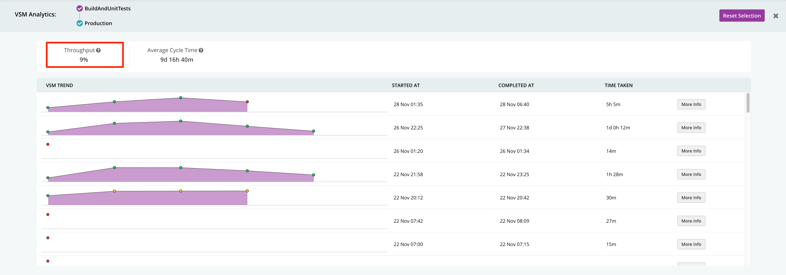
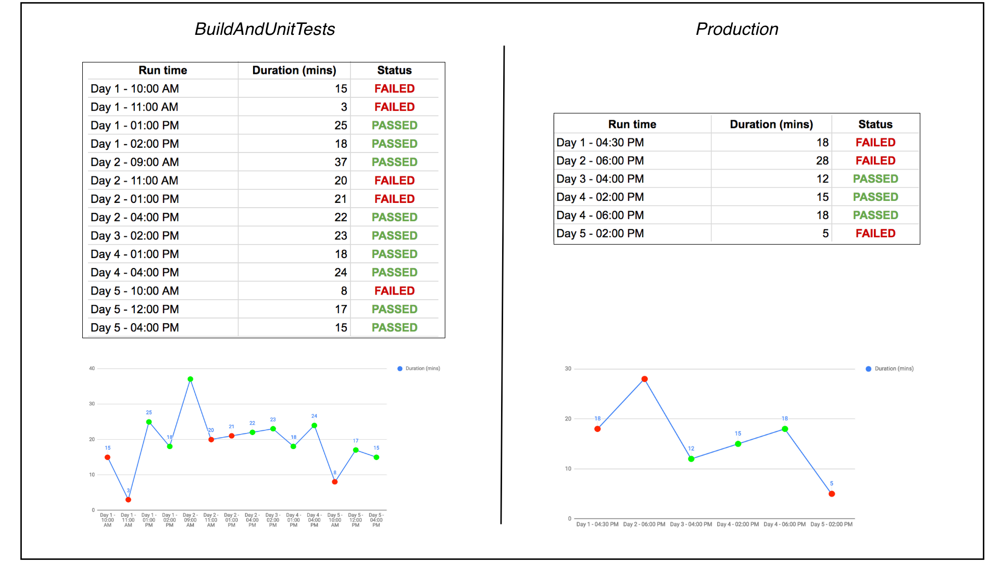

This is the second post in the series - Actionable Continuous Delivery Metrics. In the previous post, we gave an overview of why metrics matter to your CD process and what metrics we recommend you measure. In this post, we’ll get deeper into the first metric: deployment frequency.
What Deployment Frequency Is
Deployment frequency otherwise known as throughput, is a measure of how frequently your team deploys code. This metric is often represented as a percentage and it answers the question “how often do we deploy to production or to another significant point in our CD pipeline such as a staging environment?”.

We consider production deployment as a significant point in the CD pipeline and we are counting the number of times a deployment to production happens versus not happening. In the example above, we have 8 instances or opportunities to deploy, with only 2 deployments happening, so the deployment frequency is 25%.
Why Deployment Frequency Is Important
The word "continuous" in continuous delivery implies high deployment frequency. Having a high deployment frequency means that you have more deployments, and gives you more opportunities for feedback on your software. More importantly, higher deployment frequency means that you’re delivering value to end users and stakeholders more quickly.
According to the research done by the State of DevOps report team, high functioning teams have higher deployment frequency as compared to their less efficient peers. It is good to baseline your deployment frequency and try to increase it as much as it makes sense, in the context of your organization’s business and goals.
However, deployment frequency has to be balanced with quality. You don't want to increase deployment frequency by removing tests. You want to be able to deliver more often to production, while maintaining or even improving quality. That's what CD is about and what the deployment frequency metric captures.
An Example: How to Use Deployment Frequency
If you are measuring your pipeline and have low deployment frequency, what can you do? We’ll take a hypothetical example, and use GoCD, our continuous delivery server, to take you through how you can identify and act on deployment frequency issues. In our example, the team received a complaint from the business that they don’t get value very often. Let’s find out why.

The picture above shows you the continuous delivery pipelines, represented in GoCD’s Value Stream Map (VSM). Here, GoCD runs through the value stream including some unit tests, then integration tests and smoke tests in parallel, and then eventually the regression tests. Finally, there are User Acceptance Tests (UAT) and a production deployment.
To understand what is happening here, we start with finding out whether your deployment frequency is concerning. In our example, it’s easy to look this metric up in GoCD using the GoCD enterprise analytics plugin: go to GoCD’s VSM view, select the part of the CD pipeline you care about, and see the deployment frequency (known as throughput in GoCD). We can see that the throughput is only 9%, which means out of the opportunities to deploy only 9% are reaching production. This number is too low.

These can also be tracked manually in a spreadsheet or other tool. If you note down the status each time BuildAndUnitTests ran, as well as the production pipeline ran, , you’ll see more failures on the way to the production part of the CD pipelines. In the table below, you can see when you track and plot the run times, in the same time period of five days, BuildAndUnitTests ran many more times than Production. Again, you see the deployment frequency is very low.

The main signal here is clearly that the deployment frequency is low. But why and how should we act on that? There may be many reasons for this. We recommend checking the following potential causes:
- Is your build very slow? Is slowness and lack of feedback causing the development team to avoid checking in often? Do the team respond by combining changes into bigger chunks and causing even longer delays?
- Is your end-to-end lead time from commit to deployment too long?
- Do you have builds that fail very often?
- Do you have flaky tests? If tests are flaky consider understanding which ones are the biggest problem and addressing the root cause.
- Are you stopping the line to address other problems?
- Do you have long-lived feature branches or pull-requests which are not merged often?. Very often we see the development team working hard on their branches, but the business won’t see that value until the changes are deployed. If your problem is that you have work going on in long-lived branches, consider feature toggles and trunk based development.
Summary
In this post, we discussed what deployment frequency is, why it is important, and how to act on low deployment frequency. As we discussed in our previous post, there are three other important metrics we recommend measuring: lead time, change to fail percentage and MTTR. These metrics work closely with deployment frequency, and can will help you further understand the root cause of low deployment frequency. We we will cover the interrelationship of these metrics in future posts.